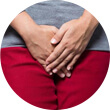
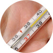
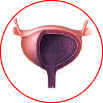
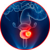
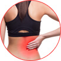

सिस्टाइटिस फुर्र से भाग खड़ा होगा!
- यह मूत्र प्रणाली के कार्य का समर्थन करता है
- फिर से संक्रमण को होने से रोकता है
- रोग के लक्षण और कारणों को समाप्त करता है
सिस्टाइटिस के लक्षण महिलाओं में
-
सेक्स के दौरान दर्द और तकलीफ
-
पेशाब के दौरान दर्द, जलन, चुभन, कभी - कभी पेशाब में खून का आ जाना.
-
मूत्राशय का हमेशा भरा हुआ महसूस होना
-

-

-
इच्छा के विपरीत मूत्र का निकल जाना, बुरी गंध
-
लगातार पेशाब आना, खुल के पेशाब न होना
-
सामान्य बीमारी, तापमान में वृद्धि
सिस्टाइटिस के विकास के लिए क्या ज़िम्मेदार है?
-
01
सुस्त प्रतिरक्षा प्रणाली, हाइपोथर्मिया
पानी या ठंडी हवा के लंबे समय तक संपर्क में रहने के बाद बार-बार जुकाम, हाइपोथर्मिया.
-
02
खराब व्यक्तिगत हाइजीन
व्यक्तिगत स्वच्छता नियमों की अवहेलना करना, अनुचित साबुन का प्रयोग, अनुपयुक्त स्वच्छता उत्पादों का उपयोग (पैड, टैम्पोन).
-
03
मूत्र प्रणाली के अंगों के रोग और सूजन
गर्भावस्था के दौरान होने वाले महिलाओं के संक्रमण. यूरोलिथियासिस जैसी कई किडनी की बीमारियां.
-
04
योनि और आंतों के माइक्रोफ्लोरा का सुस्त पड़ जाना
माइक्रोफ्लोरा में परिवर्तन, पुराने संक्रामक रोग, रोग पैदा करने वाले सूक्ष्मजीव.
-
05
बैक्टीरिया, संक्रमण, एस.टी.डी.
स्टैफिलोकोसी, एस्चेरिचिया कोलाई, आदि. यौन साथी को अक्सर बदलना, सक्रिय यौन जीवन.
-
06
पैल्विक अंगों की विकृति, संचार संबंधी विकार
महिला शरीर की बनावट सम्बंधित समस्याएं - छोटा मूत्रमार्ग, श्रोणि अंगों का परिसंचरण विकृत होना.
इलाज की कमी बहुत गम्भीर क्यों है?
सिस्टाइटिस का इलाज करने की आवश्यकता है! सही और सुरक्षित चिकित्सा के अभाव में, रोग तीव्र हो जाता है और आपके शरीर में घर कर जाता है. प्रत्येक २-४ महीनों में या थोड़ी सी भी ठंड होने पर दिक्कत फिर से हो जाती है. उपचार का अभाव या अनुचित चिकित्सा से निम्नलिखित परिणाम उत्पन्न होते हैं:
-

मूत्राशय परिगलन
-
मूत्र असंयम
-

ब्लैडर कैंसर
-

किडनी की सूजन (पायलोनेफ्राइटिस)
-
बांझपन, अस्थानिक गर्भावस्था
क्रैनबेरी - सिस्टाइटिस के उपचार के लिए एक प्रभावी उपाय
क्रैनबेरी सुपरकंसन्ट्रेट (सी) को एक पेटेंटेड तकनीक के उपयोग से बनाया गया. यह अत्यधिक प्रभावी है. १ मिलीग्राम शुष्क पदार्थ २५ किलोग्राम ताजे क्रैनबेरी के बराबर होता है.
अनुसंधानों ने साबित किया है कि सिस्टाइटिस के लिए सबसे अच्छा प्राकृतिक इलाज क्रैनबेरी ही है. क्रैनबेरी में प्रोएन्थोसाइनिडिन्स होते हैं, जो मूत्राशय की दीवारों की रक्षा करते हैं, रोगजनक माइक्रोफ्लोरा के प्रजनन को रोकते हैं, मूत्र स्राव को बढ़ाते हैं और सूजन से राहत देते हैं. स्थायी प्रभाव प्राप्त करने के लिए, आपको प्रतिदिन ताजे क्रैनबेरी को कई किलोग्राम की मात्रा में खाना चाहिए या लीटरों की मात्रा में फलों का रस पीना चाहिए. यह एकदम नामुमकिन है.
महिलाओं के स्वास्थ्य के लिए बायोफ़ॉर्मूला
Cystalex प्राकृतिक बायोकाम्प्लेक्स में क्रैनबेरी सुपरकंसन्ट्रेट (सी) और प्राकृतिक पौधों के अर्क होते हैं. इसका ख़ास जैव-सूत्र प्रयोगशालाओं और नैदानिक अनुसंधानों में उत्कृष्ट साबित हुआ है:
-
सूजन और फिर से होने वाले संक्रमण की रोकथाम
९९% -
मूत्राशय के खाली होने का अहसास
९७% -
मूत्र सम्बंधित प्रयोगशाला डेटा का सामान्य हो जाना
९६% -
यौन जीवन का सामान्यीकरण, कोई दर्द और तकलीफ नहीं
९४% -
पेशाब का सामान्यीकरण, दर्द, खुजली, जलन और बार-बार पेशाब जाने का मन न करना
९९%
*१८ वर्ष से अधिक की १८४ महिलाओं ने परीक्षण में भाग लिया.
Cystalex - पर्यावरण के अनुकूल घटकों से बने १००% आर्गेनिक कैप्सूल.
इसका प्रयोग १८ वर्ष से अधिक उम्र की महिलाओं के द्वारा किया जाना चाहिए. इससे कोई भी दिक्कत नहीं होती है क्योंकि इसका उपयोग पूरी तरह से सुरक्षित हैं. Cystalex ने मूत्रविज्ञान और स्त्री रोग के क्षेत्र में एक प्रतिष्ठित चिकित्सा पुरस्कार जीता है, जो उपचार में इसकी प्रभावशीलता और बार-बार होने वाले सिस्टाइटिस की रोकथाम की पुष्टि करता है.
- एक स्वस्थ मूत्र प्रणाली के लिए विकसित किया गया सूत्र
-

क्रैनबेरी
ये प्रोएंथोसायनिडीन की स्रोत हैं जो मूत्राशय की दीवारों के रोकने के कार्यकलाप को मजबूत करके संक्रमण और दाह से बचाती हैं।
-
अर्जुन अर्क
स्थिति के गंभीर हो जाने पर यह मूत्र निकास की प्रक्रिया को सुगम बनाती है। असुविधा दूर करती है और इसका मूत्रवर्धक प्रभाव होता है जिससे शरीर से विषैले पदार्थ निकल जाते हैं।
-
बोरहेविया डिफ्यूज़ा
इससे रुकावटें दूर होकर किडनी साफ होती हैं। इससे मूत्राशय में पथरी और मूत्र प्रणाली के दूसरे विकारों के लक्षण दूर होते हैं।
-
हाइग्रोफीलिया
ऊतकों को तेजी से वापस ठीक करके मूत्राशय की दीवारों को मजबूत करता है। इससे पथरी बनने की रोकथाम होती है और इसके एंटी-बैक्टीरियल प्रभाव भी हैं।
-
एस्पारागस रेसेमोसुस
एक प्राकृतिक एंटीस्पास्मोडिक है। इसका एस्ट्रिन्जेंट प्रभाव होता है और यह म्यूकोसल घावों को भर देता है।
-

ट्रिबुलस टेरेस्ट्रिस
इसका एंटी-इन्फ़्लेमेटरी और शामक प्रभाव होता है। यह इसे लेने के कुछ ही मिनटों के अंदर संक्रमण को दबा कर स्थानीय रोग प्रतिरोधी क्षमता तेज कर देता है।
- एक अभिनव दवा
जिन महिलाओं ने एंटीबायोटिक दवाओं के साथ सिस्टाइटिस का इलाज किया है वे अक्सर मेरे पास आती हैं. मैं आपको कम शब्दों में बताऊँ तो - एंटीबायोटिक्स मदद नहीं करती हैं! एंटीबायोटिक्स और अन्य फार्मास्यूटिकल दवाएं केवल लक्षणों को दूर करती हैं और बीमारी के कारण को प्रभावित नहीं करती हैं. पहले, मैंने अपने रोगियों के लिए हर्बल घटकों को व्यक्तिगत रूप से चयन किया था. अब यह आवश्यक नहीं है, क्योंकि Cystalex जो है - एक पूरी तरह से प्राकृतिक उत्पाद, जिसका प्रभाव संदेह से परे है.
Cystalex कैप्सूल में क्रैनबेरी, सैक्सिफ्रेज, फ्लैक्ससीड, हॉर्सटेल, कैनरी और अनानास के पौधे के अर्क होते हैं. इसमें घटकों का अद्वितीय संयोजन होता है. यह सूजन से राहत देता है, माइक्रोफ्लोरा को सामान्य करता है, रोगजनक सूक्ष्मजीवों के विकास को रोकता है और मूत्र प्रणाली के सामान्य कामकाज का समर्थन करता है. जिन रोगियों को मैं Cystalex की सलाह देती हूँ वे खुश होकर लौटते हैं. यह उपाय सबसे गंभीर मामलों में भी मदद करता है. Cystalex को सिस्टाइटिस के न केवल उपचार के लिए, बल्कि इसको बार- बार होने से रोकने के लिए भी अनुशंसित किया जाता है. आप इससे ग्रसित होने का इंतजार न करें - अपने स्वास्थ्य का ख्याल रखें!
कनुप्रिया, फायटोथेरेपिस्ट, प्राकृतिक चिकित्सक, १२ वर्षों का अनुभव
उपाय
-
01
१ कैप्सूल २ बार एक दिन में नाश्ते के बाद और १ रात के खाने के बाद, पानी या जूस के साथ.
-
02
अनुशंसित कोर्स की अवधि १ महीने की है.
-
03
सिस्टाइटिस की बीमारी से जड़ छुटकारा पाने के लिए, वर्ष में २ बार पाठ्यक्रम दोहराते रहना चाहिए.
Cystalex ने सिस्टाइटिस से छुटकारा पाने में इनकी मदद की.
ऑर्डर कैसे करें
-
1
ऑर्डर फॉर्म भरें और सटीक संपर्क जानकारी दर्ज करें.
-
2
ऑर्डर का विवरण स्पष्ट करने और जानकारी की पुष्टि करने के लिए ऑपरेटर के कॉल की प्रतीक्षा करें
-
3
पैकेज प्राप्त करें और ऑर्डर के मिलने पर भुगतान करें.